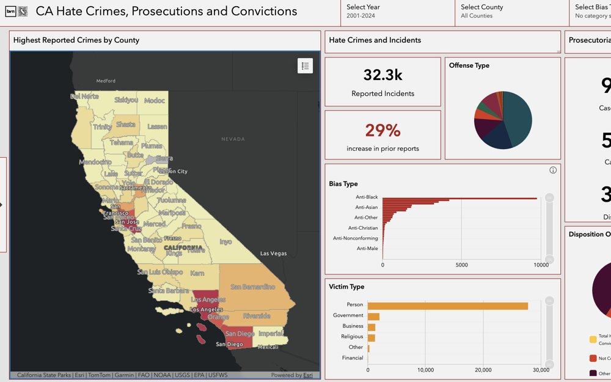
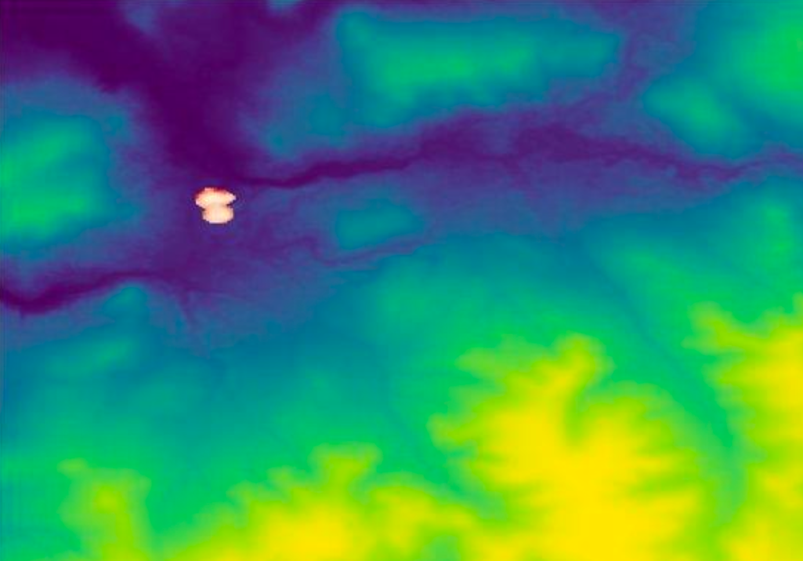
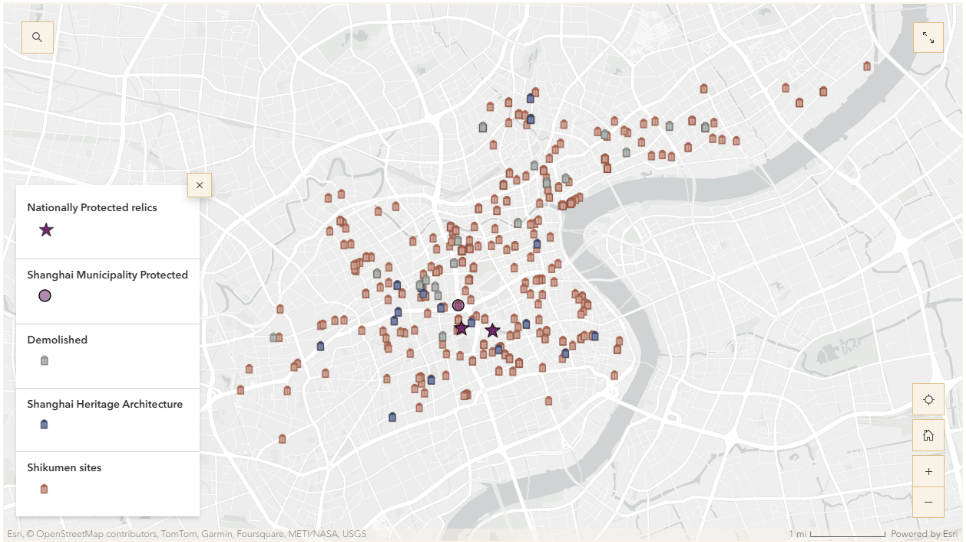
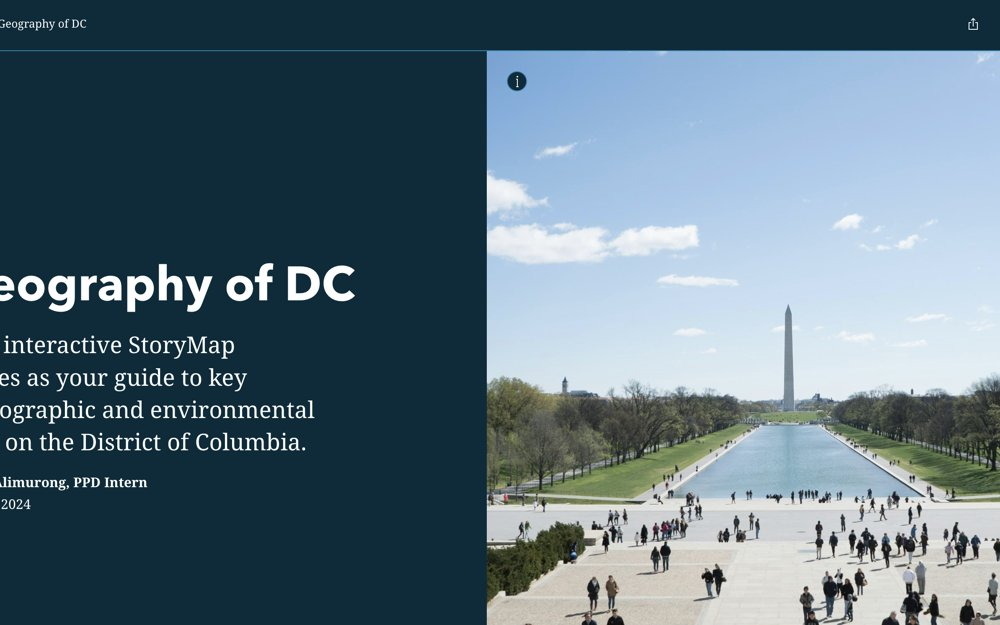
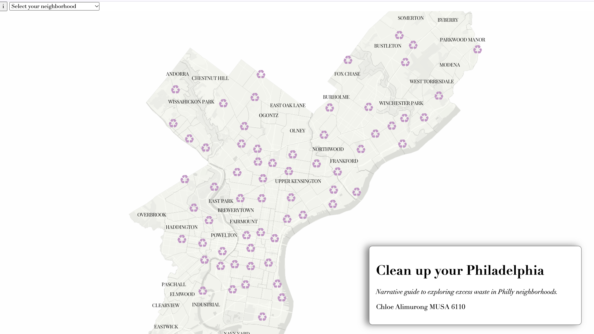
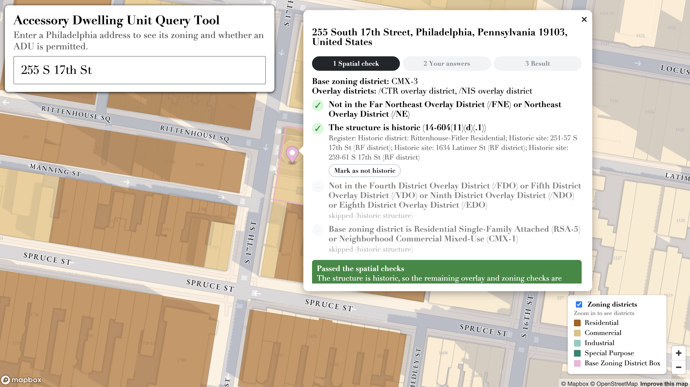
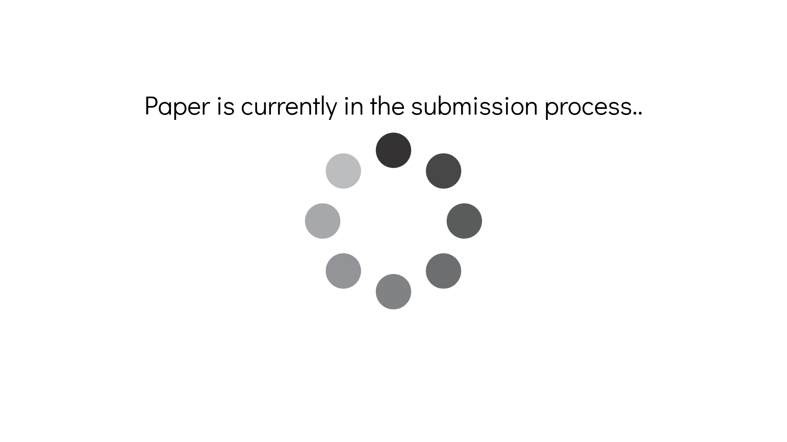

Stop the Hate Reporting Dashboard - Mapping Black California
An interactive dashboard of hate crime reports across California.

New Hampshire Health and Air Quality - NASA DEVELOP
Linking satellite air-quality data to landfills in New Hampshire.

Shanghai Virtual Lilong
An interactive map exploring the disappearance of Lilong neighborhoods in Shanghai.

Geography of DC
Mapping the spatial patterns of Washington, DC.

Clean Up Your Philadelphia
A story map about excess waste in Philadelphia neighborhoods.

Accessory Dwelling Unit Query Tool
Search your address to get a report on whether you can build an accessory dwelling unit under Philadelphia Planning Commission standards, and check your building's zoning overlays.
Protecting Soft Targets in an Age of Complex Threats - CTPN Report 2026
Lead author for the Counter Terrorism Preparedness Network. Wrote the New Orleans, Las Vegas and Southport case studies on the built environment and prevention strategies.

Future City 未来城 in Kunshan, China
A documentary film I made for one of my Media & Arts classes in China.

Social Mix in East Asia
Co-authored a literature review of social mix policies in East Asia.